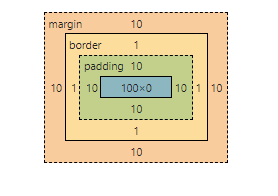

1.以下div1的offsetWidth的宽度计算？
offsetWidth = (内容宽度+内边距+边框) ,无外边距
因此offsetWidth = 100+10+10+1+1 = 122
div1

补充，2.如何让offsetWidth等于100px,该如何做?
给css样式加上box-sizing: border-box;
加上后如下图 宽度+padding+border为100
div2